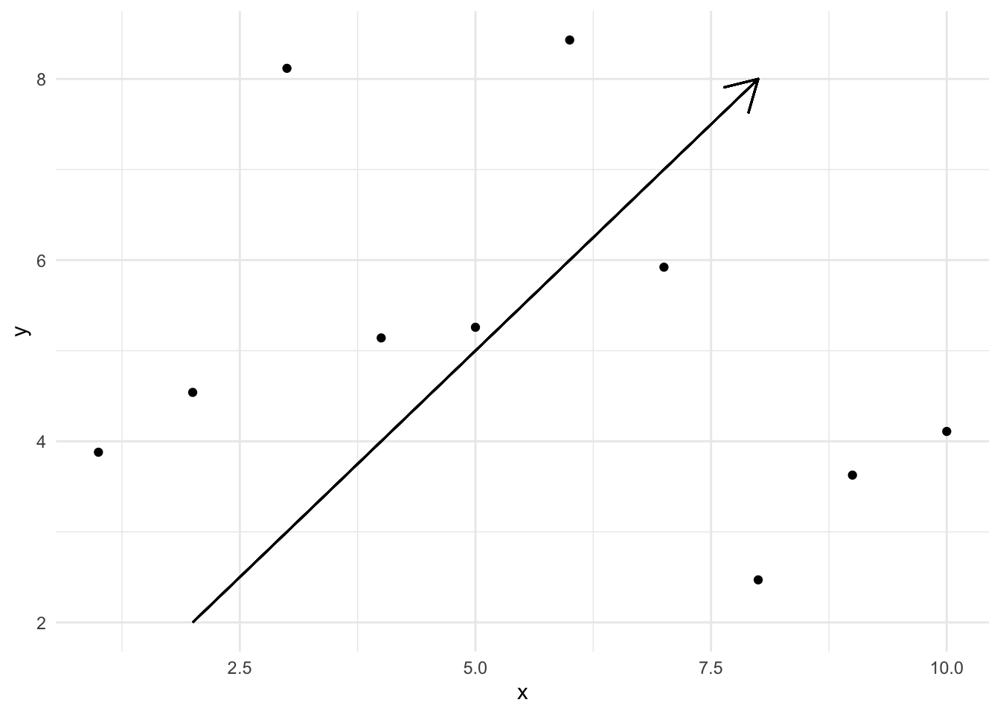
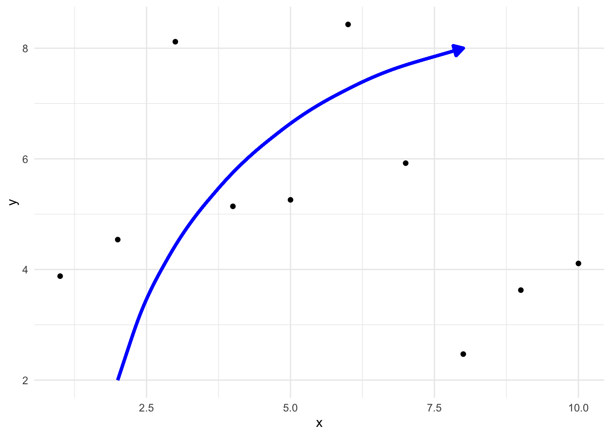

Libraries and dataset
We’ll be using the ggplot2 package to create our plots
and draw arrows. Let’s start by loading the necessary libraries and
creating a simple dataset:
Drawing the Simplest Arrow Possible
The simplest way to draw an arrow in ggplot2 is by using the
geom_segment() function with the arrow
parameter.
In this code:
- We start with a basic scatter plot using
geom_point(). - We add
geom_segment()to draw the arrow. - Inside
geom_segment(), we specify the start (x,y) and end (xend,yend) coordinates of the arrow. - The
arrow()function is used to add an arrowhead to the end of the segment.
ggplot(df, aes(x, y)) +
geom_point() +
geom_segment(aes(x = 2, y = 2, xend = 8, yend = 8),
arrow = arrow()
) +
theme_minimal()
Customizing Arrow Style
We can customize various aspects of the arrow, such as its color, size, type, and the properties of the arrowhead.
- We set the
lengthof the arrowhead to 0.5 cm usingunit(0.5, "cm"). - We change the arrowhead
typeto “closed” for a filled arrowhead. - We set the
colorof the arrow to red. - We increase the
size(thickness) of the arrow to 1.5. - We change the
linetypeto “dashed”.
ggplot(df, aes(x, y)) +
geom_point() +
geom_segment(aes(x = 2, y = 2, xend = 8, yend = 8),
arrow = arrow(length = unit(0.5, "cm"), type = "closed"),
color = "red",
size = 1.5,
linetype = "dashed"
) +
theme_minimal()
Drawing Curved Arrows
To draw curved arrows, we can use geom_curve() instead
of geom_segment().
- We replace
geom_segment()withgeom_curve(). - We add a
curvatureparameter to control the bend of the arrow. Negative values curve the arrow clockwise, while positive values curve it counterclockwise. - We adjust the
lengthof the arrowhead to 0.3 cm for better proportions with the curve. - We set the arrow
colorto blue and itssizeto 1.2.
ggplot(df, aes(x, y)) +
geom_point() +
geom_curve(aes(x = 2, y = 2, xend = 8, yend = 8),
arrow = arrow(length = unit(0.3, "cm"), type = "closed"),
color = "blue",
size = 1.2,
curvature = -0.3
) +
theme_minimal()
Going further
You might be interested in:
- How annotations work in ggplot
- Learning how to annotate a specific element in a single plot
- Exploring more ggplot2 geoms for different types of visualizations